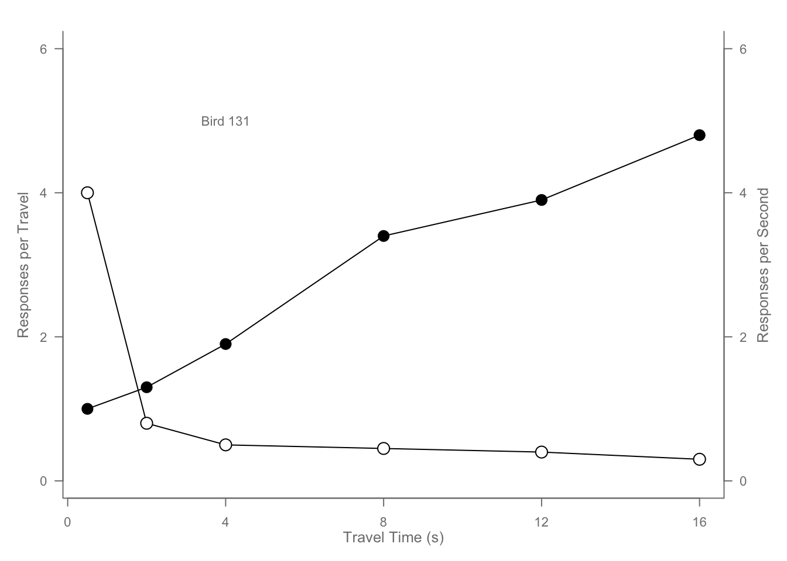

x <- c(0.5, 2, 4, 8, 12, 16)
y1 <- c(1, 1.3, 1.9, 3.4, 3.9, 4.8)
y2 <- c(4, .8, .5, .45, .4, .3)
# Two y-values (y1 and y2) are measured at the same x positions.
par(las=1, mar=c(4, 4, 2, 4), cex=.7)
# las=1: makes axis labels horizontal.
# mar=c(4,4,2,4): sets plot margins (bottom, left, top, right).
# cex=.7: shrinks text/points to 70% of default.
plot.new()
plot.window(range(x), c(0, 6))
# plot.new() starts a blank plotting canvas.
# plot.window() defines x and y ranges (here, x from 0.5 to 16, y from 0 to 6).
# This gives full control over axes and layers.
lines(x, y1)
lines(x, y2)
#Adds connected lines for y1 and y2.
points(x, y1, pch=16, cex=2) # Try different cex?
points(x, y2, pch=21, bg="white", cex=2) # Different background color
# y1 points: solid black circles (pch=16).
# y2 points: open circles with white fill (pch=21, bg="white").
# cex=2 makes them larger than default.
par(col="gray50", fg="gray50", col.axis="gray50")
axis(1, at=seq(0, 16, 4)) # 1=bottom, 2=left, 3=top, 4=right
axis(2, at=seq(0, 6, 2))
axis(4, at=seq(0, 6, 2))
# All plot lines/axes drawn in gray.
# Adds bottom (1), left (2), and right (4) axes with custom tick marks.
box(bty="u")
mtext("Travel Time (s)", side=1, line=2, cex=0.8)
mtext("Responses per Travel", side=2, line=2, las=0, cex=0.8)
mtext("Responses per Second", side=4, line=2, las=0, cex=0.8)
# box(bty="u"): draws a U-shaped frame (bottom + left + right, no top border).
# mtext(): adds axis labels outside the plot margins.
text(4, 5, "Bird 131")
# Places the text label “Bird 131” at coordinates (x=4, y=5).
par(mar=c(5.1, 4.1, 4.1, 2.1), col="black", fg="black", col.axis="black")
# Resets margins and colors so later plots aren’t affected.